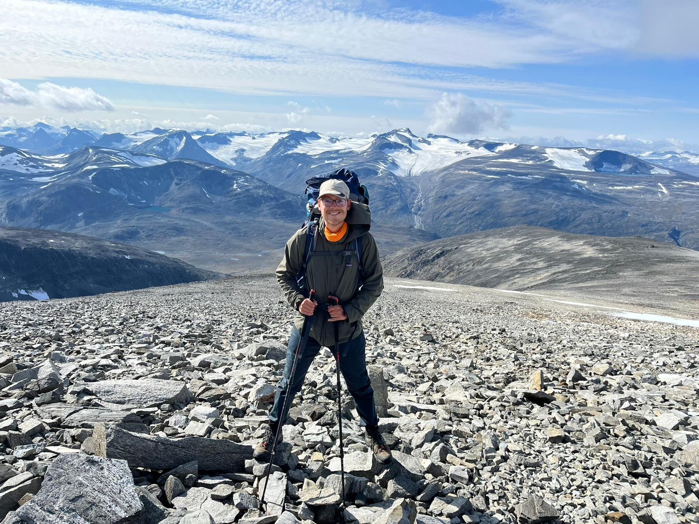

Andreas Pieper
I'm a postdoctoral researcher at IRMAR interested in the geometry of moduli spaces of curves and abelian varieties. In particular I like the question of how Newton strata intersect the Torelli locus in characteristic p<0.
My favorite Newton stratum is the supersingular one. In my thesis (link) I used Cartier-Dieudonné theory and theta groups to study the polynomials that describe Mumford's algebraic theta nullvalues restricted to the supersingular locus.
Articles and preprints
1. Constructing all Genus 2 Curves with Supersingular Jacobian, Research in Number Theory 8, 2022, link.
2. Theta Nullvalues of Supersingular Abelian varieties, preprint, 2022, link.
3. On the non-Transversality of the Hyperelliptic Locus and the Supersingular Locus for g=3, preprint, 2023, link.
4. Joint with J. Hanselman and S. Schiavone: Equations of genus 4 curves from their theta constants, preprint, 2024, link.
